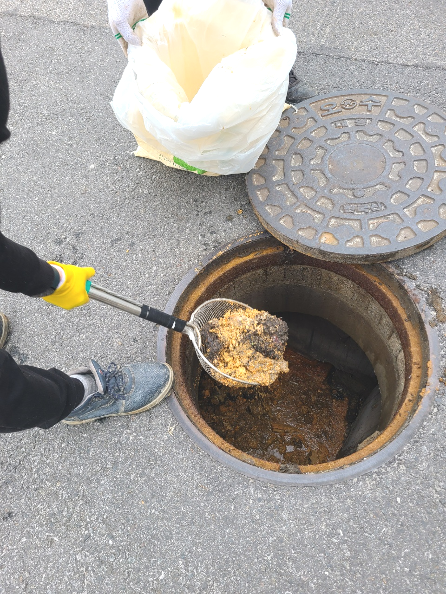
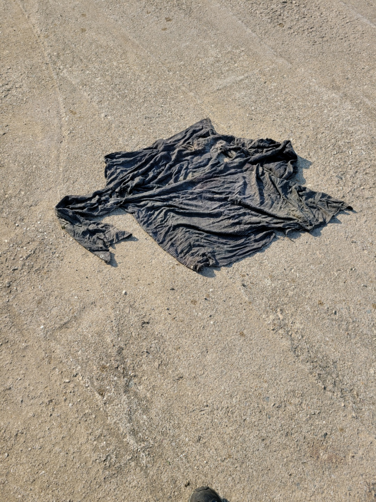
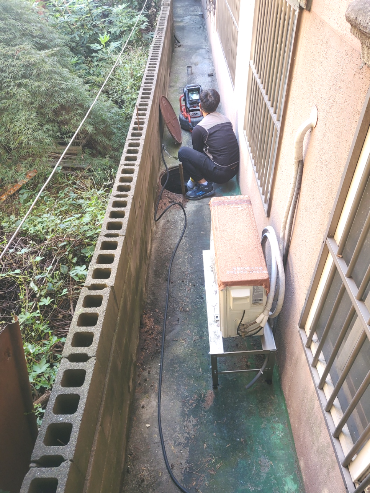
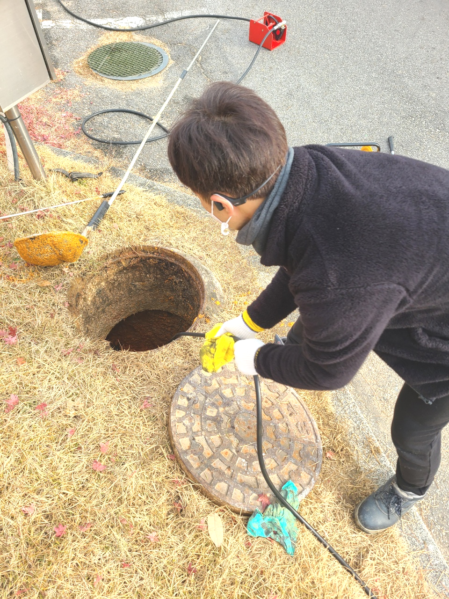
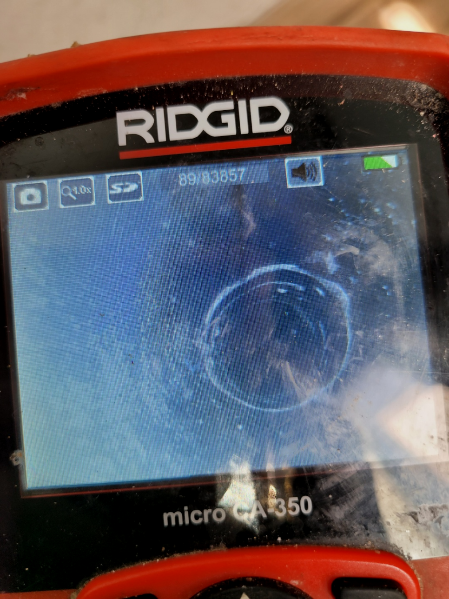
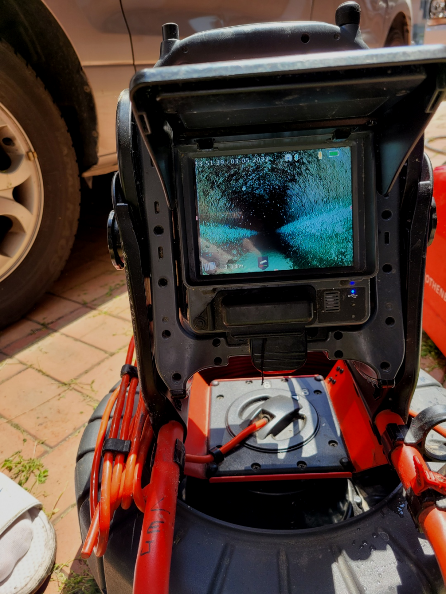

🏠 기흥 구성동하수구막힘 뚫음 마북동 배수구 기름때 역류 청소업체
수원 기흥 싱크대막힘 전문 시공 후기

📋 작업 개요
- 위치: 수원 기흥, 기흥, 수원
- 서비스 유형: 싱크대막힘, 변기막힘, 하수구막힘, 배관막힘, 누수수리, 역류해결, 뚫는업체, 배관청소, 고압세척
- 작업 일시: 2023. 10. 15. 22:37
- 업체명: 하수구수사대 (010-5615-2118)
🔍 문제 상황
어서오세요
설비전문업체 "하수구수사대"를 찾아주셔서 고맙습니다^^
우리나라는 사계절 변화가 뚜렷한 만큼 계절의 영향을 많이 받는배출구 같은 설비에 문제가 발생할 확률이 높습니다.
전문업체에 연락하는건 다소부담스러워 혼자 가능한 해결해보고 싶어 하수관를 뚫어보려고 시도하게 됩니다. 하지만 금방 해결되는 간단한 상황도 있지만 문제파악이 확실하게 안된다면 실패하거나 또 막히기 일쑤 입니다.
기흥 구성동하수구막힘 뚫음 마북동 배수구 기름때 역류 청소업체
🔎 원인 분석
💡 전문가 진단: 기흥 구성동하수구막힘 뚫음 마북동 배수구 기름때 역류 청소업체
물이 지나는 곳이라면 이렇게 다양한 곳에서 알 수 없는 시간에 배수관막힘 현상이 일어나는데요. 따라서 이를 대비하여 어떻게 문제를 해결 및 대처해야 할지 알아두셔야 합니다. 이번 방문 현장을 통해 배수관막힘이 발생을 하면 어떻게 해결을 하는지 과정을 공유해 드리도록 하겠습니다.
관리사무소 같은 곳에서는 하수도전문장비없에이 도와주시기 때문에 정확하게 막힌 지점을 뚫어낼 수가 없으서 며칠이 지나지 않아 다시 막혀버릴 것 입니다. 뿐만 아니라 뚫는 장비가 여러가지 있는데 가능한 많이 보유하고 있지 않으면 실패할 수도 있습니다.
심각하게 막힌 현장은 기본장비로는 소용이 없어서 다른 방법을 진행해야 하는데 이럴때 주로 사용하는 것이 샤프트장비입니다. 배수 장비는 이물질을 단순히 뚫어내기보단 이물질을 분쇄하는 방식으로 최근에 많이 사용하고 있는 방식입니다.
해당 업계에서는 어정쩡한 배관 기사도 방문하는 경우가 많은데 저희 업체에서는 오랜 경력의 베테랑들로만 구성 중이 있는데 이러한 이유는 초심자가 작업할 경우 이해도 자체가 당연히 부족하여 상황 판단부터 하수뚫음까지도 어려울 수 있기 때문입니다.
배관배관 내의 작업은 그 어떤 작업보다도 세심한 주의가 필요한데요. 작업자들의 안전을 위해서도 철저한 조치가 필요하다고 할 수 있습니다. 전문 장비를 장착을 하고 본격적으로 배관 작업을 진행하였는데요. 하수구 막힘은 머리카락 뭉치로 인해서 발생을 하게 된 것이었습니다.
악취는 배출구 내부에 많은 이물질들이 서로 엉켜서 발생하는 악취입니다. 이러한 고약한 악취는 공기를 타고 올라와 외부로 유출이 됩니다. 그렇기 때문에 하수구를 고치기 위해서는 근본적인 원인을 알아야 합니다.

🔧 작업 과정
하수도막힘 부분을 해결하기 위해서 샤프트 장비를 사용하기로 하였고 배관 아래에 넣어 이물질들을 빠르게 분쇄 진행하였습니다. 이 장비를 사용하는 이유로는 하수도내부 벽면에 달라붙어있는 부분까지 깔끔하게 제거하면서 배관 내 상태를 최적의 상태로 만들어주기 위함인데요
뚫어도 금방 막히는 배수같은 경우에는 한 번쯤 고압세척 작업과 함께 내시경 촬영 작업을 통해서 확인을 해 보시는 것을 추천드립니다. 뚫는 작업이 한번에 작업으로 모두 제거가 되면 좋지만 이물질들이 너무 오래되어서 딱딱하게 굳어서 한 번에 제거를 하기가 쉽지 않았습니다.
배수구 막혔다면 어떤상황이 발생할까요? 느리게물이흘러가거나 역류가발생하거나 누수가발생하게되는데요.이중에서 하나라도 보셨다면 확실히막힌것이에요
방문하는 전문배관공들도 좋은실력을가지고있는 실력자들로만 이루어져있어요.처음하시는분이 서투르게 배출관를 만지게된다면 경험이없기때문에 배수관이손상되고 이게끝이아닌 다른상황들도 발생시킬수있기에 실력도 한몫하는데요
배수원인은 상당히많기때문에 대처법들을 숙지하고있기는 어려운게 현실이죠.셀프시도는 옳지않기에 생각을다르게 해주시는게좋아요.실력자분들에게 문의해보시는게 가장빠르답니다.그러하나 찾아보더라도 수없이많은 업체들로인해 의뢰하려하더라도 어떤곳을 택해야되는지 어려우실겁니다
스스로해결이되는 상황이였으면 하수도 전문기사는있지도 않았을겁니다.배관에있는 석회들은 물에는녹지못하고 안타깝지만 시간이가면갈수록 지속적으로 누적되어서 상황이심각해지게됩니다.
배출관수리비용에관해서 알려드려보자면 말도없이 믿기힘든돈을 요구하고있지 않습니다.기본적인비용이 들때는 의뢰하실때 알려드리고 있습니다만 통화로는 힘들면 내방을무료로하고 견적을알려 드리고있어요.
고객님들은 그전에 다른 곳에서 퇴수구배관 막힘을 해결한 적이 있는데 장비를 한두 개만 가지고 뚝딱 작업하고 갔다며 하소연을 하시더라고요. 저희와 같은 신기한 장비도 없이 바로 퇴수구를 뚫고 가셨다면 당연히 이물질 제거가 꼼꼼히 안 되었을 겁니다.


✅ 작업 완료
주방배출관 배관에 쌓인 이물질이 오랫동안 머물면 단단하게 굳어 약품으로는 제거가 되지 않습니다. 그래서 또 다시 배출관막힘이 반복적으로 발생합니다. 하수구청소 전문가는 최첨단 전문장비로 배출관막힘 원인을 확실하게 파악하고 근본적인 원인을 없애 해결해드리고 있습니다.
누차 말씀드리지만 하수관 설계는 복잡스럽기 때문에 일반적인 분들은 무턱대고 헤집는 것을 꼭 삼가셔야만 합니다.또 다른 예시로는 고장을 확인하시고서도 별생각 없이 내버려 두셨다가 점점 심각해져서 수리비가 늘어나기도 합니다.
#하수구막힘 #하수구뚫음 #하수구역류 #씽크대막힘 #싱크대역류 #오수관막힘 #하수구청소 #욕실하수구막힘 #변기막힘 #하수구뚫는비용 #싱크대수리 #화장실막힘




⚠️ 베란다 누수 및 방수 관리 방법
- ✅ 비가 많이 올 때 창틀 주변이나 아래층 천장에 얼룩이 생기는지 정기적으로 확인해 보세요.
- ✅ 우수관 주변 실리콘 마감이 들뜨거나 깨진 틈새가 있는지 손상 여부를 수시로 체크하세요.
- ✅ 베란다 바닥 타일의 줄눈(메지)이 소실되면 그 틈으로 물이 침투하여 누수가 유발됩니다.
- ✅ 누수 의심 증상 발견 시 방치하면 아래층 손실이 커지므로 즉시 전문가의 진단을 받으십시오.
💡 핵심 정리
- 확실한 장비 작업(내시경 점검 및 샤프트 스케일링)으로 원인을 뿌리 뽑습니다.
- 작업 후 1년 이내에 동일한 부위 재발 시 100% 무상 A/S 서비스를 보장합니다.
- 서울 · 경기 · 인천 전 지역에 24시간 언제든 긴급 출동할 수 있도록 항시 대기 중입니다.
❓ 자주 묻는 질문 (FAQ)
🚨 수원 기흥 싱크대막힘 문제로 고민이신가요?
정확한 원인 진단과 확실한 시공으로 재발 없는 해결을 약속드립니다.
24시간 긴급 출동 | 서울 · 경기 · 인천 전지역 | 1년 내 재발 시 무상 A/S